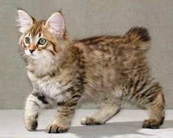

|  |
| American Bobtail |
BEHAVIOR
American Bobtails are just big balls of fuzzy love. They bond strongly with their people and are even sensitive to when people are stressed. No wonder they make such great therapy cats. They crave attention and company.
American Bobtails are loving lapcats. And these cats are great with children, dogs, and other cats. They're also a bit sticky-fingered (sticky-pawed?), so be sure to put shiny objects like jewelry somewhere your furry friend can't reach them. They are frisky and fun-loving, but not hyperactive.
GROOMING
Thanks to their varied origins, American Bobtails are relatively low-maintenance cats. You can expect to brush your Bobtail once or twice per week to remove dead hair and skin cells, and to keep his or her coat shiny and healthy.
In any breed of cat, poor dental hygiene can lead to periodontal disease, so it's important to brush your Bobtail's teeth at least once per week. Supplementing with plaque-controlling treats can help maintain dental health, but should never be the only method of dental hygiene you use on your cat.
Many cats' ears are susceptible to injury and infection, so be sure to examine your cat's ears every week. Gently remove any dirt or debris with a dampened cotton pad or cloth. Cotton swabs can damage the delicate inner-ear structures, so avoid using them whenever possible. If your cat's ears are excessively dirty, inflamed, red, or smell funny, contact your vet as soon as possible.
Although American Bobtails are docile cats with lower energy levels, keeping his or her nails trimmed can help save your furniture—and your legs—from boredom-induced scratching. Plus, neatly trimmed nails will keep his or her paws healthy, too. You can expect to trim your cat's nails once every few weeks, but it's important to examine his or her paws weekly in case of injury or infection.
It's true that American Bobtails are lower energy and have lower exercise requirements, but be sure to dedicate a few minutes of each day to playtime. Like their doggy counterparts, the Golden Retriever, American Bobtails love to play with toys, play fetch, or complete puzzle games. If you take the time to leash train, many American Bobtails enjoy going on leashed walks, too.
HEALTH PROBLEMS
Thanks to their massive gene pool, American Bobtails are generally healthy cats with no predispositions to inherited health conditions. That doesn't mean that every American Bobtail will never experience health problems, however.
It's important to note: American Bobtails with no tail may experience spinal issues that can lead to fecal incontinence. If you're buying a Bobtail from a breeder, make sure he or she has a written health guarantee, which can offer some assurance against these spinal issues.
In additional to spinal conditions, American Bobtails may experience other common health issues like:
- Polycystic kidney disease (PKD): A condition characterized by the development of cysts on one or both kidneys
- Hypertrophic cardiomyopathy: The thickening of the heart muscle
NUTRITION
Your American Bobtail's diet will depend largely on his or her age, activity levels, and general health, but in general, should be fed high-quality, high-protein food. If you'd like to add some variation to your Bobtail's diet, you can try mixing some wet food in with his or her dry food a few times per week.
Obesity is a common problem in all breeds of cats, so it's important to follow feeding guidelines closely, and give treats in moderation. If you're not sure how much to feed your Bobtail, your vet will be able to provide some helpful guidelines.